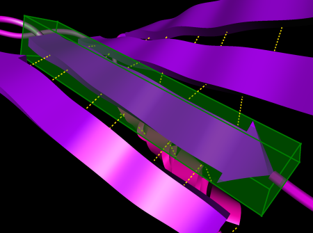

Substructure Selection
As mentioned in Section 1.1.2, ProteinShop represents proteins on three levels of hierarchy - graph of bonded atoms, chain of amino acid residues, and chain of secondary structures. Many protein manipulation operations require the selection of protein substructures.
Selecting individual atoms may be necessary in viewpoint navigation, to move the camera's view center point to an atom's position. Atom selection mode is entered by pressing the z hotkey. After that, an atom is selected by clicking the left mouse button. As the mouse button is clicked, ProteinShop calculates a ray passing through the mouse cursor position into the scene, and selects that atom whose van-der-Waals sphere that ray intersects first. In other words, if the current rendering mode includes van-der-Waals sphere rendering, atom selection works in a WYSIWYG ("what you see is what you get") fashion - the selected atom will be the one whose van-der-Waals sphere is visible directly underneath the mouse cursor.
Individual amino acid residues can be selected in two different ways. First, residues can be selected according to chain order using the "Residue index" slider inside the Residue Dialog. Second, residues can be selected directly by holding down the <Alt> modifier key and clicking the left mouse button inside the main display window. Direct selection of residues always works in WYSIWYG fashion. When clicking on any part of the protein visualization inside the main display window, ProteinShop will select the residue "owning" the selected visualization part.
Some rendering parts are not associated with individual residues, and can therefore not be used to select residues. These include hydrogen bonds, which are always associated with two residues, structure cartoons, which are associated with an entire secondary structure, and collision spheres, which are associated with two atoms from typically two different residues. Rendering modes suitable for residue selection include van-der-Waals spheres, bond sticks, hydrogen bond sites, hydrogen cages, and the backbone polylines that are rendered when all other rendering modes are disabled.
The currently selected amino acid residue is highlighted by rendering it in the bond sticks rendering mode, see Figure 1. This means that if the current rendering mode includes bond stick rendering, the currently selected residue will not be distinguishable from the rest of the protein.
Secondary structure selection works analogously to residue selection. A secondary structure can either be selected via the "Structure index" slider in the Structure Dialog, or by holding down the <Ctrl> modifier key and clicking the left mouse button inside the main display window. Direct structure selection also always works in WYSIWYG fashion; suitable rendering modes are van-der-Waals spheres, bond sticks, structure cartoons, hydrogen bond sites, hydrogen cages, and the default backbone polylines.
The currently selected secondary structure will be highlighted by surrounding it with a green translucent box, see Figure 2. This box doubles as the 3D interaction widget used to transform the selected structure by translating and rotating it in three dimensions.
|  |
| Figure 2: The currently selected secondary structure is highlighted by surrounding it with a transparent green box, the 3D interaction widget. |
A special case of secondary structure selection is toggling the activation state of coil regions for subsequent structure dragging. Coil regions can only be activated/deactivated directly, by holding down both the <Shift>+<Ctrl> modifier keys and clicking the left mouse button over the visualization of a coil region in the main display window (mnemonic: activate/deactivate coil regions by selecting them while holding down the <Shift> modifier key). Active coil regions are highlighted by rendering their structure cartoons in yellow.